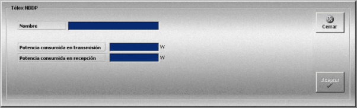

Telex NBDP
La creación y edición de modelos de télex NBDP se realiza mediante la siguiente ventana.

Mediante esta ventana el instructor define los modelos de télex NBDP que estarán disponibles para las unidades que intervienen en el simulador.
Para cada modelo de télex NBDP se definen los siguientes datos:
Nombre: Nombre del equipo.
Formato: caracteres alfanuméricos.
Potencia consumida en transmisión: Potencia que consume el equipo en transmisión.
Unidades: vatios
Rango: 0.0 - 1000.0
Potencia consumida en recepción: Potencia que consume el equipo en recepción.
Unidades: vatios
Rango: 1.0 - 1000.0
Si la unidad dispone de baterías, la potencia consumida por el equipo se tiene en cuenta para evaluar el tiempo que las baterías pueden alimentar a los diferentes equipos de comunicación de que dispone una unidad.